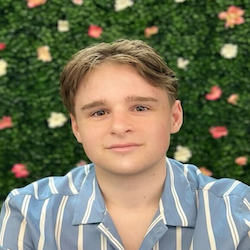

Tirta Susilo | Group Leader
Tirta Susilo | Group Leader
Tirta is an Associate Professor in Psychology at Victoria University of Wellington. His research expertise is perception, cognition, and neuroscience, with a focus on face perception and its disorders in prosopagnosia. Tirta has 15+ years of research experience in NZ, Australia, and the US. He has worked on many topics beyond face perception including object recognition, word recognition, body recognition, synaesthesia, autism, and theory of mind [Homepage] [Email]
 Lizzie Collyer | Research Assistant
Lizzie Collyer | Research Assistant
Lizzie is a research assistant working to improve the diagnosis of prosopagnosia. Lizzie completed her Masters thesis on visual attention to illusory faces and has worked on various projects in the lab both with typical participants and those with prosopagnosia.
Vai Bhana | MSc Student
Vai is completing her Masters project. The project explores the relationship between visual imagery abilities and face recognition skills using an individual differences approach, with a focus on face processing under sensory uncertainty and minimal information.
 Pacey Soane | MSc Student
Pacey is doing his MSc project looking at visual attention to faces under sensory uncertainty and minimal information. Pacey completed his honours project on repetition blindness to faces and is currently training to be a clinical psychologist.
- © Untitled
- Design: HTML5 UP